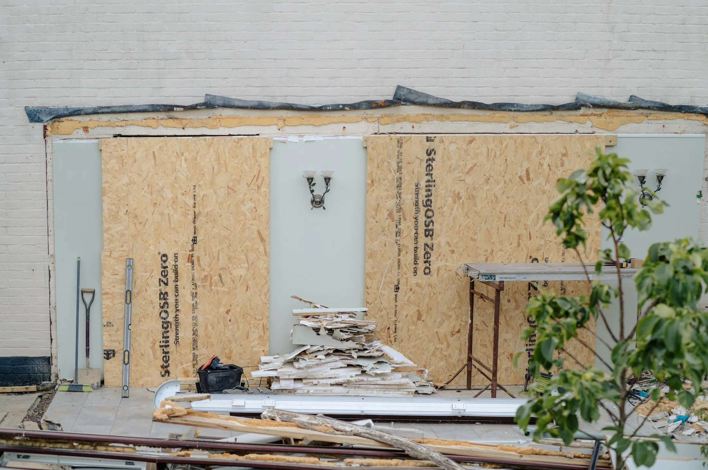

Vom Ist-Zustand zum Fahrplan.
Beim Erstgespräch klären wir Ihre Ziele, die gewünschten oder nötigen Maßnahmen und den finanziellen Spielraum – und beraten Sie zu Wohnkomfort, Wertsteigerung Ihrer Immobilie und Prioritäten. Dann folgt die Ist-Analyse, aus der ein individuelles Sanierungskonzept mit Kosten- und Wirtschaftlichkeitsanalyse entsteht.

Beispiel-Fahrplan
Vier Schritte, eine Reihenfolge, die trägt.
Klicken Sie sich durch ein Beispiel: Ein fiktives freistehendes Einfamilienhaus, Baujahr 1968, ungedämmt, Gasheizung. Die Zahlen sind gerundete Beispielwerte, keine Angebotsgrundlage – Ihr Gebäude rechnen wir individuell.
265 kWh/m²·a Endenergie · ca. 4.400 € Heizkosten/Jahr
Beispielrechnung mit gerundeten Werten für ein fiktives Gebäude. Fördersätze vereinfacht (15 % Grundförderung + 5 % iSFP-Bonus; Heizung mit Boni). Ihre Werte ermitteln wir im individuellen Sanierungsfahrplan.
Warum die Reihenfolge zählt
Erst die Hülle, dann die Technik.
Eine Wärmepumpe im ungedämmten Haus braucht hohe Vorlauftemperaturen und läuft ineffizient. Wer erst dämmt, kann die Anlage kleiner auslegen – und vermeidet Sackgassen wie Fenster, die später in der falschen Ebene sitzen.
Individueller Sanierungsfahrplan
Der iSFP: förderfähig, aufeinander abgestimmt, überprüfbar.
Der individuelle Sanierungsfahrplan zeigt sinnvolle Maßnahmen zur Verbesserung der Energieeffizienz Ihrer Immobilie. Anhand des energetischen Ist-Zustands wird der Soll-Zustand ermittelt – mit Kostenermittlung, Wirtschaftlichkeitsanalyse, sinnvoller Priorisierung der Maßnahmen und Prüfung der Förderfähigkeit. Er wird selbst bezuschusst und erhöht die Förderung späterer Einzelmaßnahmen an der Gebäudehülle.
Bausteine
Was in der Sanierungsberatung steckt.
Fünf Bausteine, die ineinandergreifen – vom ersten Termin bis zur Auszahlung der Förderung.
Bestandsaufnahme
Gebäudetyp, Baujahr, beheizte Nutzfläche, bisherige Maßnahmen; Prüfung von Gebäudehülle, Heizungsanlage und relevanten Bauteilen; Energiebedarfsermittlung vor und nach der Sanierung – bei Bedarf Thermografie und Luftdichtheitsmessung.
Sanierungsfahrplan
Der iSFP zeigt, welche Maßnahme wann sinnvoll ist, was sie kostet und was sie einspart – förderfähig und aufeinander abgestimmt.
Feuchteschutz
Besonders bei Innendämmung und Anschlussdetails rechnen wir das Feuchteverhalten nach, statt auf Erfahrungswerte zu vertrauen.
Umsetzungsbegleitung
Ausschreibungsunterstützung, Angebotsprüfung und Kontrolle der Ausführung über alle Bauabschnitte.
Nachweisführung
Bestätigung zum Antrag und nach Durchführung – damit die zugesagte Förderung auch tatsächlich ausgezahlt wird.
Jetzt beraten lassen
Ihr Gebäude, Ihre Reihenfolge.
Wir erfassen den Ist-Zustand und erarbeiten einen Fahrplan, der bezahlbar bleibt und die Förderung mitnimmt.